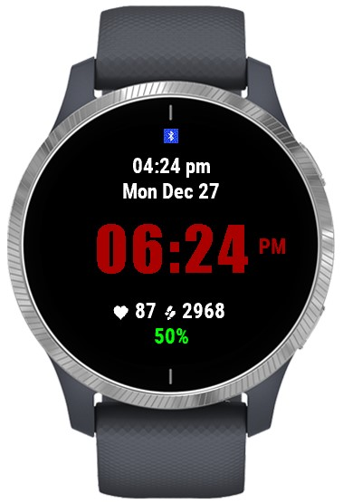
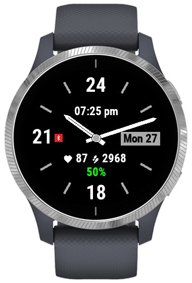

INFO
ClockJx is a configurable watch face that has both digital and analog clocks. Different colors and settings on the display can be changed. There is also an option to use a skiing and mountain themed image in the background.
 {kind=link}
{kind=link}
Always visible on the clock screen are:
- Current time in either analog or digital format
- Current day and date
- Battery status in percentages
Optionally it is possible to show one or all of the following information on the clock face:
- Bluetooth connection status
- Current heart beat
- Daily step count
- Current altitude
- Dual time in digital format
Configuration options are:
- Analog or digital clock
- Digital time color
- Background color
- Foreground color
- Background image
- ClockJx default font or system font for digital time display
- Bluetooth status display
- Dual time and dual time daylight savings time offset
- Bigger dual time font size with analog clock when altitude is not displayed
- Low and critical battery warning levels
- Battery status background color
- Analog 24 hour clock
- Step count
- Current heart beat
Normally battery status is show with a green color. If battery goes below low battery warning level (default 25%) it is shown in orange color. If battery goes below critical battery warning level (default 10%) most other elements like analog watch face numbers and altitude and step count turn to red. The idea is that you should not miss a low battery status before going on a training.
If Bluetooth status is shown then an active connection is shown with a blue Bluetooth icon. If connection is not active it is shown with a red Bluetooth icon.
Configuration
Configuration works from a mobile phone. You cannot configure directly from a Garmin device. In the mobile phone you need to go to watch face section and select the installed ClockJx watch face. Then you can select settings and change them there.